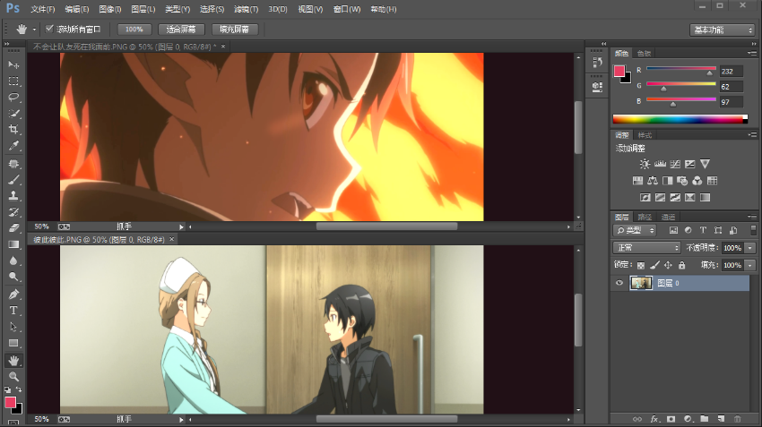
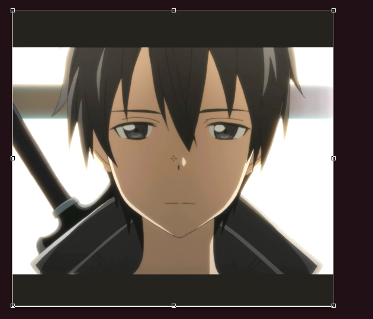

一、画面的移动和缩放
1.抓手工具
快捷键是H或按住空格，可以用来移动画面视图。抓手工具的选项栏中的“滚动所有窗口”可以用在将多个窗口分栏显示时的对比，勾选
后只要移动其中一个窗口，另一个窗口的图像也会跟着移动。如图:

选项栏的另外几个选项只是改变图片的显示尺寸。
在抓手工具栏里还有一个旋转视图工具，故名思义，就是用来旋转视图的，快捷键R。
2.缩放工具
首先，放缩工具只是为了查看方便而对视图进行的调整，并不会对图片的像素造成任何修改，快捷键有很多，可以按住空格+Alt和空格+Ctrl，还可以Ctrl+
和Ctrl-。
与抓手工具类似，放缩工具也有一个选项“放缩所有窗口”。
“细微缩放”是一个很好用的功能，只要按住鼠标左键然后左右移动鼠标就可以流畅的放大缩小画面。 放缩画面还有一种方法，那就是窗口-导航器，如下图:

使用导航器也可以很方便的查看画面各个部分。
二、移动工具
快捷键V，移动工具是对图层进行移动的。
1.文档间的移动
利用移动工具可以将一个文档内的图层拖拽到另一个图层，并且这个操作的性质是“复制”。如果在另一个文档中松开鼠标左键的同时按住Shift键，就可以令拖
拽过来的图层在新文档中仍然保持在原文档中的对应位置，不过这个操作的前提是两个文档的像素大小相同，若不相同，则这个操作只会令图层处于正中央（如
果文档中含有选区，则会移动到选区的正中央）。
2.自动选择
快捷键：在移动工具状态下，按住Ctrl键。
移动工具是对图层进行移动的，这样移动不同图层的图像时就需要不断切换图层，比较麻烦，但这可以用选项栏的“自动选择”来避免。勾选自动选择后只需要点
击有像素的部分就会自动切换到包含该像素的图层。
3.多选移动
当在选中多个图层的情况下时，就可以用移动工具对多个图层同时进行移动。
4.移动并复制
按住Alt键，再对图层进行移动，原图层不会动，但会将原图层复制一份来跟着移动。
5.约束角度
按住Shift键，再对图层进行拖动就只能在水平、垂直、45°三个方向上进行移动。
6.轻微移动
在移动工具下选定图层，按下方向键，可以对图层进行轻微的移动，同时如果按下Alt键，就可以复制出一个图层。
7.变换控件
勾选移动工具的变换控件后，图层内的图形四周就会出现变换按钮，如图:

这样，就可以对图形进行调整。
8.图层的对齐与分布
对齐：对齐是对两个及以上的图层进行操作的，并且是以图层的各个基准线为准的，不同的对齐方式基准线不同。
如图可以很形象看出各种对齐方式的基准线：
，依次是顶对齐、底对齐、左对齐、右对齐、水平居中对齐、垂直居中对齐。 前四种对齐的位置是由选中图层时的次序决定的，第
一个被选中的图层位置固定，而后两种的位置是所有被选中图层所在的矩形区域的中线处，不过也可以某个图层的位置为准，这要将所有进行操作的图层链接
在一起（使用图层面板最下方的图层链接按钮），这样，只要选中一个图层，然后点击水平/垂直居中对齐，那么其它图层就会自动以被选中的图层的位置来
进行对齐。
分布：分布是对三个及以上的图层进行操作的，操作的目的是使各个图层间的水平、垂直距离相等，计算的距离是最边缘图层间的位置距离。